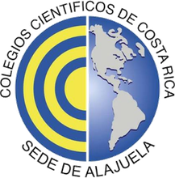
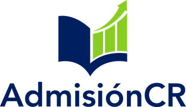
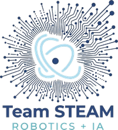
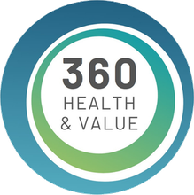
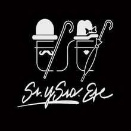
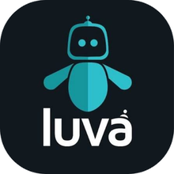

WRO 2026 · ROBOTS AND CULTURE · COSTA RICA
Despertamos el interés
en lo que de verdad importa.
Multisensory · Engineering · Cyberphysical · Humanized
Construimos espacios inmersivos que combinan inteligencia artificial, proyección y movimiento físico. Nuestros robots convierten cualquier tema —cultura, educación, salud, historia— en una experiencia que se vive, no que se lee.
« si es inmersivo, es MECH »
CON EL APOYO DE






EL PROBLEMA, EN CIFRAS
Cuando falta contexto,
el interés se apaga.
No es una intuición: es lo que dicen los datos sobre educación, cultura y atención. Y también lo que dicen sobre la solución.
RECORRIDO
Conoce el proyecto.
Cada sección responde una pregunta distinta.
La empresa
Quiénes somos, qué significa M.E.C.H y el equipo detrás del proyecto.
El problema
La indiferencia, la crisis educativa costarricense y la ciencia de la atención.
El robot
Cómo funciona, de qué está hecho y cómo se construyó desde cero.
La evolución
De MECH‑1 a MECH‑4: qué aprendimos y qué mejora cada generación.
Aplicaciones
Museos, aulas, farmacéuticas y empresas — con su modelo de negocio.
Contacto
Hablemos. Y conoce a quienes hacen posible el proyecto.
«La única manera de frenar este problema es combatirlo con la misma tecnología.» — Trabajo escrito de MECH, WRO 2026